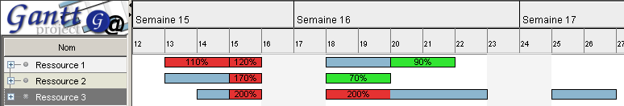
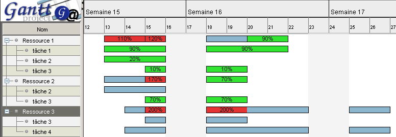

Graphique des ressources
Un graphique spécifique est disponible pour toutes les ressources utilisées.
Il affiche le temps d'utilisation des ressources :

- les rectangles verts (par défaut) indiquent des sous-charges (pourcentage d'activité
de la ressource inférieur à 100 % ;
- les rectangles bleus (par défaut) indiquent une
charge normale (pourcentage d'activité de la ressource égal à 100 % ;
- les rectangles rouges (par défaut) indiquent des surcharges (pourcentage d'activité
de la ressource supérieur à 100 %.
Dans le cas des sous-charges et des surcharges, il est indiqué le pourcentage d'activité de la ressource dans
le rectangle. Si le rectangle est trop petit pour affiché correctement ce pourcentage, ce dernier ne sera
pas affiché.
 Vous pouvez modifier les couleurs des rectangles de charges :
Vous pouvez modifier les couleurs des rectangles de charges :
- menu Edition, Préférences ;
- option Général, Couleurs ;
- cliquez sur le bouton Couleur en face de Ressources, Ressources (surchargées) ou
Ressources (sous-chargées) ;
- choisissez la couleur par défaut désirée.
Détail des affectations
Il est possible de voir le détail des affectations et ainsi la charge de travail par ressource et par tâche.
